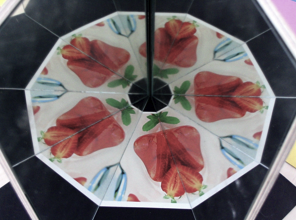
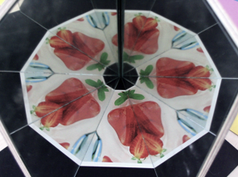
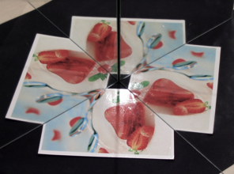
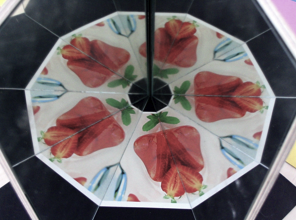

What happens if a mirror is reflected in another mirror?
The simulation on the right shows two mathematical mirrors. The angle
between the mirrors can be controlled by the slider below. The entire object is reflected repeatedly.
The resulting situation is very sensitive to the angle between the two mirrors. Only if this angle is a divisor of 180° the iterated mirror images
of the objects fit exactly together. This situation arises for divisors of 180° this is
90°, 60°, 45°, 36°, 30°, etc.
|

|
|

|
Images of a real pair of mirrors for 90°, 60°, 45° and 36°.